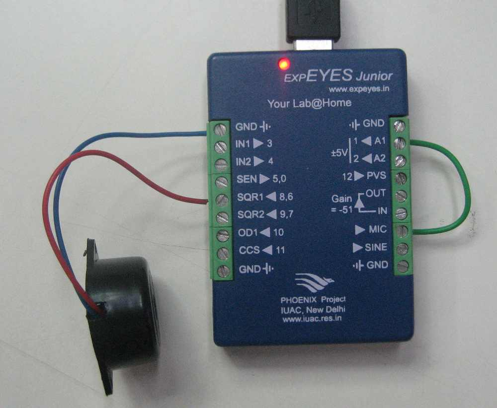
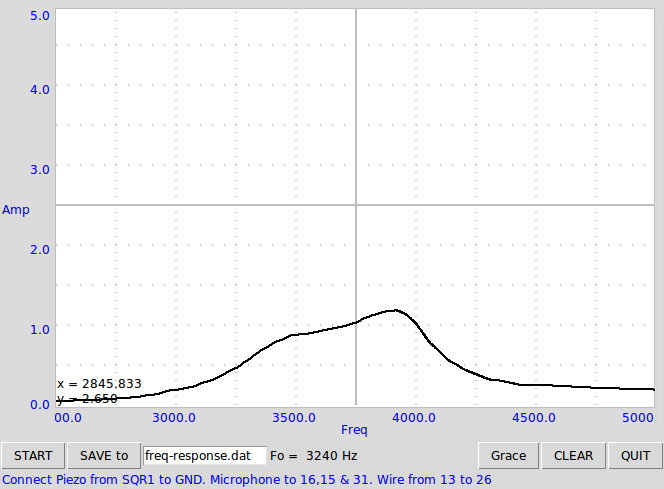

The Piezo electric undergoes compressions and expansions under the applied voltage. The resonant frequency depends on the support material and the dimensions. The 27 mm diameter disc used in this case has a resonant frequency of around 3800 Hz.
 